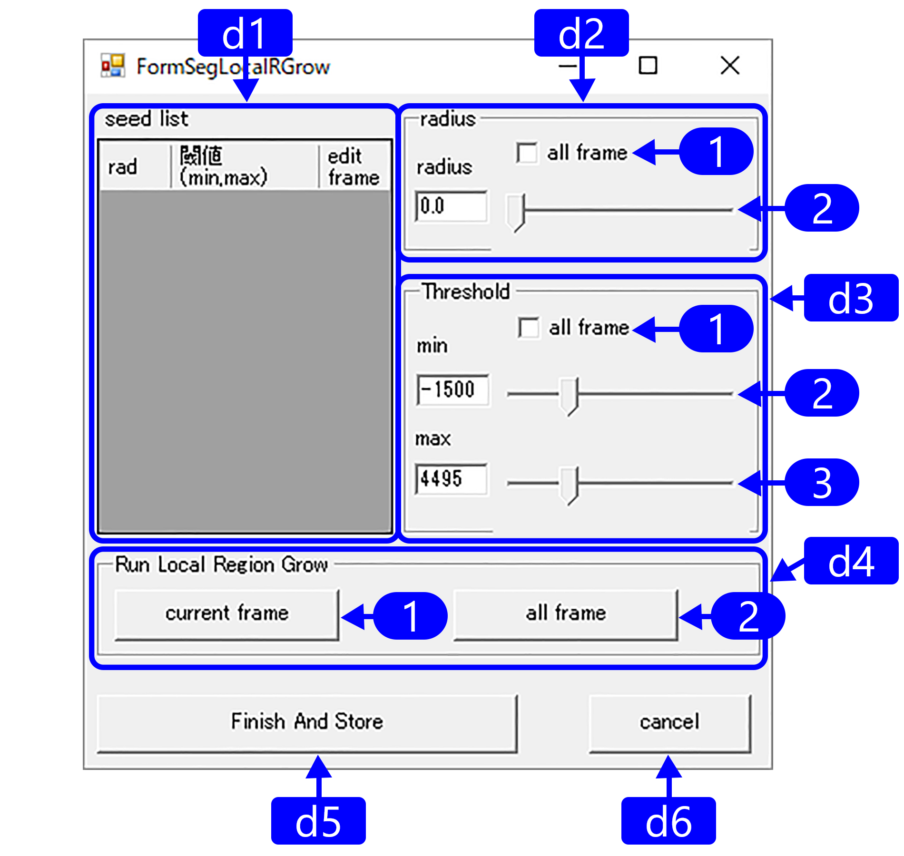

Parallel Contors

top page I/O Visualization Segmentation Refinement code
Local Region Growing (Sphere)
このツールは，4次元X線CT画像に対して領域拡張(Region Growing)を行い，前景領域を抽出し，詳細な4次元形状モデルの作成を行うためのものです．
Workflow
- ツールの起動 : Click "Menu > ModeSwitch > Segmentation Local Region Grow"
- シードの配置 : シードを複数配置し，その影響範囲と閾値を設定する．
- 領域分割 : Region Growingにより局所的な領域分割を行う．
- 終了 : ダイアログ右下のFinish And Storeを押す．
|
L-double click シード配置 M-wheel(Active) シード半径変更 M-double click シード削除 L-drag 移動 R-drag 回転 M-wheel スライス移動 M-drag 拡大縮小 |
|  |
d1. Seed list 配置したシードの情報 d2. Threshold slider シードの閾値設定（下限/上限） d3. Radius slider シードの半径設定 d4. Run Local Region Grow 領域計算を行う d5. Seed Sort シードのソート（実装予定） d6. Save / Load Seeds 配置したシード情報の保存/呼び出し d7. Cancel 作業中止（作業内容が消えるため要注意） d8. Finish And Store 作業終了，Vizualization maskへ移動 RegionGrowingでは，シードの隣接画素を探索し，拡張規則を満たす画素を前景領域として抽出する．画像全体に同じ拡張規則が適用される． RoiPainterでは，シードを複数配置し，それぞれに異なる閾値と影響範囲を指定することで局所的に領域を抽出することが可能です．また，前景領域を抽出する「ポジティブシード」に加え，背景領域を抽出する「ネガティブシード」を配置することで，領域の誤抽出を修正することができます．さらに，影響範囲を指定する形状として，球と円筒の2種類を提供する． d2では，RegionGrowingで抽出する輝度値の範囲を設定します． |